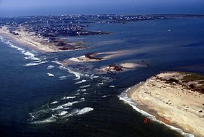

From today's featured article

Hurricane Isabel struck North Carolina on the East Coast of the United States on September 18, 2003. Forming in early
September in the tropical Atlantic Ocean, the storm had moved northwestward, with peak winds of 165 mph (265 km/h).
Isabel made landfall on the Outer Banks with winds of 105 mph (165 km/h), then quickly weakened over land and became
extratropical over western Pennsylvania the next day. It produced moderate to heavy damage across eastern North
Carolina. Storm surge and strong winds in Dare County damaged thousands of houses and created a 2,000-foot (600 m)
inlet on Hatteras Island (pictured), washing out parts of North Carolina Highway 12 and isolating the village of
Hatteras for two months. Across the state, up to 700,000 residents were left without power. Three deaths in North
Carolina were attributed to the storm, and statewide damage was estimated at $450 million.
Did you know..
- that Belgian footballer Romelu Lukaku (pictured) has scored two international hat-tricks, but only one is recognised by
FIFA?
- ... that the murder of Deborah Linsley on a train in 1988 hastened the speed with which British Rail abolished the use
of the type of compartment coach in which she died?
- ... that from 1660 to 1700, the majority of Japanese porcelain was made to be exported?
... that attorney Kristin Cooper, the current First Lady of North Carolina, has performed in several plays with her
daughters?
- ... that Arrowe Country Park sits on land purchased in 1800 by the Mayor of Liverpool with money earned from the slave
trade?
- ... that the German composer Karl Ludwig Drobisch and his brother calculated planetary movements?
- ... that Sabrina, a critique of the modern "fake news" era, is the first graphic novel to be longlisted for the Booker
Prize?
- ... that Alexander Polycleitos Cawadias denied there was such a thing as a true hermaphrodite?